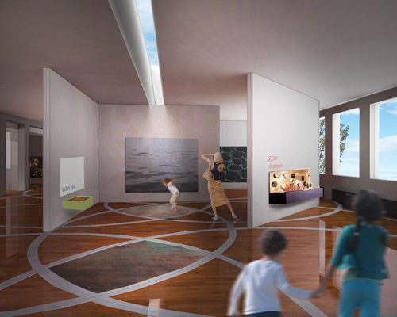

<html>

<head><html>

<link rel="stylesheet" href="../../Style_sheets/style.css" type="text/css" />

<script type="text/javascript" src="http://use.typekit.com/gfg0phy.js"></script>
<script type="text/javascript">try{Typekit.load();}catch(e){}</script>
<script type="text/javascript" src="http://use.typekit.com/gfg0phy.js"></script>
<script type="text/javascript">try{Typekit.load();}catch(e){}</script>

	<title>Caitlin Santone</title>
	
	<script type="text/javascript">

  var _gaq = _gaq || [];
  _gaq.push(['_setAccount', 'UA-29755784-1']);
  _gaq.push(['_trackPageview']);

  (function() {
    var ga = document.createElement('script'); ga.type = 'text/javascript'; ga.async = true;
    ga.src = ('https:' == document.location.protocol ? 'https://ssl' : 'http://www') + '.google-analytics.com/ga.js';
    var s = document.getElementsByTagName('script')[0]; s.parentNode.insertBefore(ga, s);
  })();

</script>
	
</head>
</html>

<body>

<div class='main'>

	<h1><a href="/">CAITLIN SANTONE</a></h1>
	
	<div class='contact-column'>
		<div class='contact-info'><a href="/About">About</a></div>
			<div class='clear'></div>
		
		<div class='contact-info'><a href="/Docs/Caitlin_Santone_Resume_Web_2012.pdf" Target="blank">Resume</a></div>
		<div class='clear'></div>
		
		<div class='contact-info'><a href="/Contact">Contact</a></div>
		<div class='clear'></div>
		
		<div class='contact-info'><a href="/Links">Links</a></div>
		<div class='clear'></div>
	</div>
	
	<div class='project-container'>
		<div class='running-text'>
			<h2>RIMOSA (Rhode Island Museum of Science and Art)</h2>
			<p>Dissect, distort, reform</p>
			<p>2010<br/>
			219 W Park Street, Providence, RI<br/>
			6,200 sq. ft.</p>
			
			<p>"The Rhode Island Museum of Science and Art merges art and science creating innovative, interactive exhibits and programs that awaken curiosity, encourage experimentation, and improve understanding of the world around us." --RIMOSA</p>	
			<p>In both science and art, physical interaction (such as dissecting, distorting, and reforming) reveals new discoveries and points of view.  Arriving at the most innovative outcome often means using unorthodox processes, or ways of looking at the subject.  One must get away from preconceived notions about what something is supposed to be in order to discover its potential. The structure of this museum can be dissected, distorted, and reformed continuously. </p>
			
			<a href="RIMOSA_interior_800.jpg" Target="blank" title="RIMOSA Interior"></a>
			
			<p>Existing conditions</p>
			
			<a href="Existing_conditions_1.jpg" Target="blank" title="Existing exterior"></a>
			
			<a href="Existing_conditions_3.jpg" Target="blank" title="Existing exterior"></a>
			
			<a href="Existing_conditions_2.jpg" Target="blank" title="Existing exterior"></a>
			
			<p>Concept diagrams and models</p>
			
			<a href="Curiosity_truth_500.jpg" Target="blank" title="Concept diagrams"></a>
			
			<a href="Process_400.jpg" Target="blank" title="Concept diagrams"></a>
			
			<a href="Concept_models2.jpg" Target="blank" title="Concept models"></a>
			
			<a href="Concept_models1.jpg" Target="blank" title="Concept models"></a>
			
			<a href="RIMOSA_plan_1200.jpg" Target="blank" title="RIMOSA floor plan"></a>
			
			<div class='page-links-container'>
			
			<div class='page-links'><a href="/">Back to index</a></div>
			
			<div class='page-links-right'><a href="/Project_Pages/Mask">Next</a></div>
			<div class='page-links-right'><a href="/Project_Pages/Picturing_Space">Previous</a></div>
		</div>		
		<div class='clear'</div>
		<div class='footer'><div class='running-text2'><div>&copy; Caitlin Santone 2012</div></div></div>			
	
	</div>
</body>